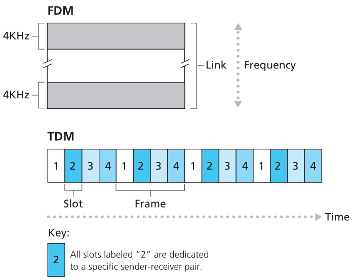
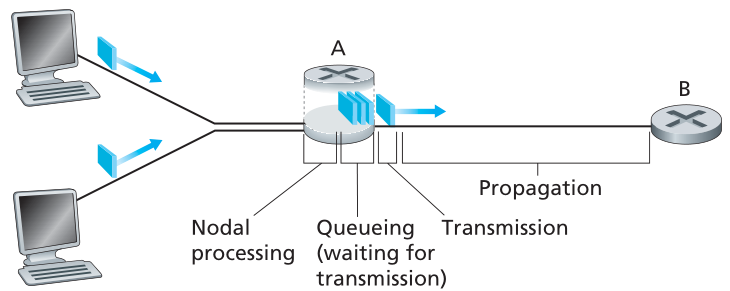
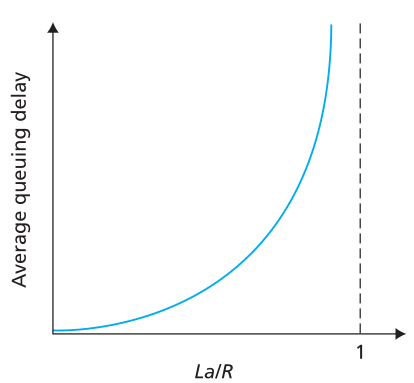
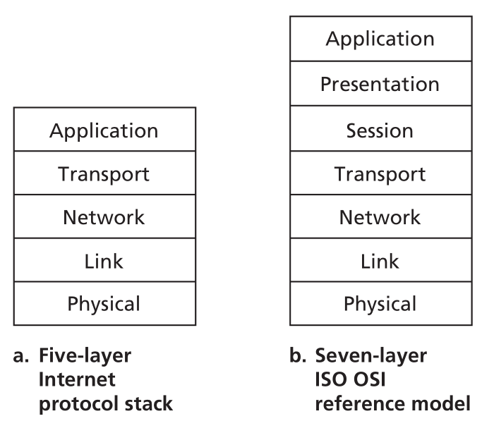

The Internet
A nut-and-bolts description
hosts(end systems): Many devices that are being hooked up to the Internet, such as laptops, smartphones, tablets, etc.
The way end systems communicate with each other:
- End systems are connected together by a network of communication links(coaxial cable, copper wire, optical fiber…) and packet switches.
- Transmission rate: The rate of different links can transmit data, measured in bits/second.
- Steps:
- The sending end system segments the data and adds header bytes to each segment.
- The resulting packages (packets) are sent through the network to the destination end system.
- The destination end system reassmbled into the original data.
Packet switch:
Goal: take a packet arriving on one of its incoming communication links and forwards that packet on one of its outgoing communication links.
Type:
both forword packets toward their ultimate destinations.
- routers: used in the network core.
- link-layer switches: used in access networks.
route(path): The sequence of communication links and packet switches traversed by a packet from the sending end system to the receiving end system.
ISP(Internet Service Prociders):
End systems access the Internet through ISPs, the ISPs that provide access to end systems must also be interconnected.
The lower-tier ISPs are interconnected through national and international upper-tier ISPs.
TCP/IP:
Transmission Control Protocol(TCP):
Internet Protocol(IP): specifies the format of the packets that are sent and received among routers and end systems.
A services Description
The Internet is as an infrastructure that provides services to applications.
API(Application Programming Interface):
End systems attached to the Internet provide an API that specifies how a program running on one end system asks the Internet infrastructure to deliver data to a specific destination program running on another end system.
API:A set of rules that the sending program must follow so that the Internet can deliver the data to the destination program.
Protocol
NOTE: It takes two(or more) communicating entities running the same protocol in order to accomplish a task.
All activity in the Internet that involves two or more communicating remote entities in governed by a protocol.
Hardware-implemented protocols in two physically connected computers control the flow of bits on the “wire” between the two network interface cards.
Congestion-control protocols in end systems control the rate at which packets are transmitted between sender and receiver.
Protocols in routers determine a packet’s path from source to destination.
Definition:
A prtocol defines the format and the order of messages exchanged between two or more communicating entities, as well as the actions taken on the transmission and/or a message or other event.
The Network Edge
End system are also referred to as host.
Hosts are divided into two categories:
1. clients: desktop PCs, smartphones…
2. servers: powerful machines that stores and distribute Web pages…
Access Networks
Access network: the network that physically connects an end system to the first router(edge router).
DSL(digital subscriber line)
A residence typically obtains DSL Internet access from the same local telephone company(telco) that provides its wired local phone access.
The residential telephone line carries both data and traditional telephone signals simultaneously, which are encoded at different frequencies:(frequency-division multiplexing)
- High-speed downstream channel: 50kHz to 1MHz band
- medium-speed upstream channel: 4kHz to 50kHz band
- two-way telephone channel: 0 to 4kHz band
cable Internet access
Make use of the cable television company’s existing cable television infrastructure.
At the cable head end, the cable modem termination system(CMTS) turning the analog signal sent from the cable modems back into digital format.
FTTH(fiber to the home)
An optical fiber path from the CO directly to the home.
Two optical-distribution network
- active optical networks(AONs)
- passive optical networks(PONs)
PONs:
Each home has an optical network terminator(ONT), which is connected by optical fiber to a optical fibers, which connects to an optical linw terminator(OLT). In the home, users connect a home router to the ONT and access the Internet via home router.
Ethernet and WiFi
A local area network(LAN) is used to connect an end system to the edge router.
- Ethernet: Ethernet uesers use twisted-pair copper wire to connect to an Ethernet switch. The Ethernet switch is in turn connected into the larger Internet.
- WiFi: wireless users transmit/receive packets to/from an access point that is connected into the enterprise’s network.
3G and LTE
- Third-generation(3G) wireless provides packet-switched wide-area wireless Internet access at speeds in excess of 1 Mbps.
- Fourth-generation(4G) of wide-area wireless networks(LTE: Long-Term Evolution) can achieve rates in excess of 10 Mbps.
Physical Media
Physicak media fall into two categories:
- guided media: the waves are guided along a solid medium. fiber-optic cable, twisted-pair copper wire, coaxial cable.
- unguided media: the waves propagate in the atmosphere and in outer space. wireless LAN, digital satellite channel.
Twisted-Pair Copper Wire
Twisted pair consists of two insulated copper wires,each about 1 mm thick, arranged in a regular spiral pattern.
(The wires are twisted together to reduce the electrical interference from similar pairs close by)
Unshielded twisted pair(UTP) is used for computer networks.
Coaxial Cable
Coaxial cable consists of two copper conductors which are concentric rather than parallel.
Fiber Optics
An optical fiber is a thin, flexible medium that conducts pulses of light, with each pulse representing a bit.
1. A single optical fiber can support tremendous bit rates.
2. Fiber optics are immune to electromagnetic 3. interference.
4. Very low signal attenuation.
5. Very hard to tap.
The Network Core
Packet Switching
End systems exchange message with each other.
To send a message from source to destination:
Long messages are broke into samll chunks of data(packets).
Packets travels through communication links and packet switches(routers or link-layer switches).
The transmit time: L/R seconds. As a packet of L bits and a link with transmission rate R bit/sec.
Store-and-Forward Transmission
The packet switch must receive the entire packet before it can begin to transmit the first bit of the packet onto the outbound link.
Routers need to receive, store, and process the entire packet before forwarding.
The time of transmitting N L-bits packets that elapses from source to destination through a router
time = ((N+1)L)/R
R is the transmit rate over the link
The time of transmitting a L-bits packet that elapses from source to destination through N routers(N+1 links)
time = ((N+1)L)/R
Queuing Delays and Packet Loss
The packet switch has an output buffer(output queue).
output queue: stores packets that the router is about to send into that link.
Queuing delays: An arriving packet needs to be transmitted onto a link but the link busy with the transmission of another packet, the arriving packet must wait in the output buffer.
Packet loss: An arriving packet find that the buffer is full, then either the arriving packet or one of the already-queued packets will be dropped.
Forwarding Tables and Routing Protocols
Every end system has an address IP address.
The source includes the destination’s IP address in the packet’s header.
The router examines a portion of the packet’s destination address and forwards the packet to an adjacent router.
Each router has a forwarding table that maps destination addresses to the router’s outbound links.
The Internet has a number of special routing protocols that are used to automatically set the forwarding tables.
Routing protocol determines the shortest path from each router to each destination.
Circuit Switching
The resources needed along a path(buffers, link transmission rate) to provide for communication session between the end systems are reserved for the duration of the communication link.
When the network establishes the circuit, it also reserves a constant transmission rate in the network’s links for the duration of the connection.
As a given transmission rate has been reserved, the sender can transfer the data to the receiver at the guaranteed constant rate.
Multiplexing in Circuit-Switched Networks
- frequency-division multiplexing(FDM)
- time-division multiplexing(TDM)
FDM:
the frequency spectrum of a link is divided up among the connections.
A frequency band to each connection for the duration of the connection.
The width of the band is the bandwidth.
TDM:
Time is divided into frames of fixed duration.
Each frame is divided into a fixed number of time slots.
A time slots in each frame for the sole use of a connection.
The transmission rate of a circuit is equal to the frame rate multiplied by the number of bits in a slot.

Silent periods: Circuit switching has silent periods when one in connections stops transmitting, the network resources cannot be used by other ongoing connections.
The time transmitting a packet through circuit-switched network:
The total time = The time of establish an end-to-end circuit + The time of transmitting a packet through link
The performance of two forms of sharing a link
- Circuit switching: pre-allocates use of the transmission link regardless of demand, with allocated but unneeded link time going unused.
- Packet switching allocates link use on demand. Link transmission capacity will be shared among those users who need to transmit packets.
A Network of Networks
Goal
To interconnect the access ISPs so that all end systems can send packets to each other.
Naive Approach
Each access ISPs directly connect with every other access ISP.
Network Structure 1
Interconnects all of the access ISPs with a single global transit ISP (global transit ISP is a network of routers and communication links that spans the global)
Network Structure 2
Consists of access ISPs and multiple global transit ISPs.(access ISPs choose among the competing global transit providers)
Network Structure 3
access ISPs connect to a(multiple) regional ISP(s), each regional ISP connects to tier-1 ISPs(global transit ISPs)
Network Structure 4
Consisted of access ISPs, regional ISPs and tier-1 ISPs.
PoPs exist in all levels (except access ISPs), are a group of routers in the provider’s network where customer ISPs can connect into the provider ISP.
Multi-home: ISPs choose to connect to more than one provider ISPs.
Peer: A pair of nearly ISPs at the same level can directly connect their network together so that the traffic will not through higher level ISPs.
IXP(Internet Exchange Point): A meeting point where multiple ISPs can peer together.Network Structure 5
Additional content provider networks: “bypass” the upper tiers of the Internet by peering with lower-tier ISPs, either by directly connecting with them or by connecting with them at IXPs.
Delay, Loss, and Throughput in Packet-Switched Networks
Overview of Delay in Packet-Switched Networks
total nodal delay = nodal processing delay + queuing delay + transmission delay + propagation dalay

Types of Delay
When a packet arrives at router, the router examines the packet’s headers to determine the appropriate outbound link. A packet can be transmitted on a link only if there is no other packet currently being transmitted on the link, otherwise preceding it in the queue.
Processing Delay
The time required to examine the packet’s header and determine where to direct the packet.
Queuing Delay(microseconds to milliseconds)
At the queue, the packet waits to be transmitted onto the link.(Depend on the number of earlier-arriving packets that are queued and waiting for transmission onto the link)
Transmission Delay(microseconds to milliseconds)
The length of the packet is L bits, and the transmission rate of the link is R bits/sec.
Transmission Delay is the amout of time to push all of the packet’s bits: L/R.
Propagation Delay(milliseconds)
The time required to propagate from the begining of the link to the destination of the link.
Propagation Delay = d/s. d: the distance between two routers; s: the propagation speed of the link.
Comparing Transmission and Propagation Delay
Transmission delay: the amount of time required for the router to push out the packet.
A function of the packet’s length and the transmissin rate of the link.
Propagation Delay: the time it takes a bit to propagate from one router to the next.
A function of the distance between the two routers.
The total nodal delay d_nodal is equal to:
d_nodal = d_proc + d_queue + d_trans + d_prop
d_proc: processing delay
d_queue: queuing delay
d_trans: transmission delay
d_prop: propagation delay
Queuing Delay and Packet Loss
depends on the rate ate which traffic arrives at the queue, the transmission rate of the link, and the nature of the arriving traffic(periodically or in bursts)
traffic intensity
La/R
L: all packets consist of L bits.
a: the average rate at which packets arrive at the queue (packets/sec).
R: the transmission rate (bits/sec).
WARNING:
La/R > 1: the average rate of bits arrive at the queue exceeds the rate of bits transmit from the queue, the queue delay will approach infinty.
Two conditions of traffic intensity
- When traffic intensity is close to zero, the average queuing delay will be close to zero.
- When the traffic intensity is close to 1, the arrival rate exceeds the transmission capacity, a queue will form during these periods of time.
NOTE: the traffic intensity approaches 1, the average queuing delay increases rapidly. A small percentage increase in the intensity will result in a much larger percentage-wise increase in delay.

Packet Loss
As the queuing capacity of a router in finite, a router will drop the packet when no place to store such a packet. So the packet will be lost.
End-to-End Delay
The total delay from source to destination
There are N - 1 routers between the source host and the destination host.
The end-to-end delay d_e2e = N(d_proc + d_trans + d_prop)
d_proc: the processing delay at each router
d_trans: d_trans = L/R; R: the transmission rate; L: the packet size.
s_prop: the propagation on each link.
End System, Application, and Other Delays
- May purposedfully delays its transmission as part of its protocol.
- Media packetization delay.
Throughput in Computer Networks
Instantaneous throughput:
At any instant of time is the rate(in bit/sec) at which Host B is receiving the file.
The average throughput = F/T bits/sec
F bits in the file
T seconds to transfer from the sources to the destination.
A example on two end system
Two end systems, a server and a client, connected by two communication links and a router.
Suppose R_s denote the rate of the link between the server and the router; R_c denote the rate of the link between the router and the client.
For two-links network, the throughput is min{R_c, R_s}, that is the transmission rate of the bottleneck link.
When a network with N-links, the transmission rates of the N links being R_1,R_2,…,R_N, the throughput is min{R_1, R_2,…, R_N}.(Suppose the core of the communication network have very high transmission rates)
Summary about throughput
Throughput depends on the transmission rates of the links over which the data flows.
The throughput depends not only on the transmission rates of the links along the path, but also on the intervening traffic.
Protocol Layers and Their Service Models
Layered Architecture
Each layer, combined with the layers below it, implements some functionality, some service.
As long as the layer provides the same service to the layer above it, and uses the same services from the layer below it, the remainder of the system remains unchanged when a layer’s implementation is changed.
Protocol Layering
The prorocols are implemented in layers.
Each protocol belongs to one of the layers.
A protocol layer can be implemented in:
- software (HTTP and SMTP of application-layer protocols are implemented in software)
- hardware
- a combination of the two
Application-layer protocols and transport-layer protocols are implemented in software in the end system.
Physical layer and data link layer are responsible for handling communication over a specific link.
Network layer is often a mixed implementation of hardware and software.
The protocol stack: The protocols of the various layers.
- the physical layers
- the link layers
- the network layers
- the transport layers
- the application layers
